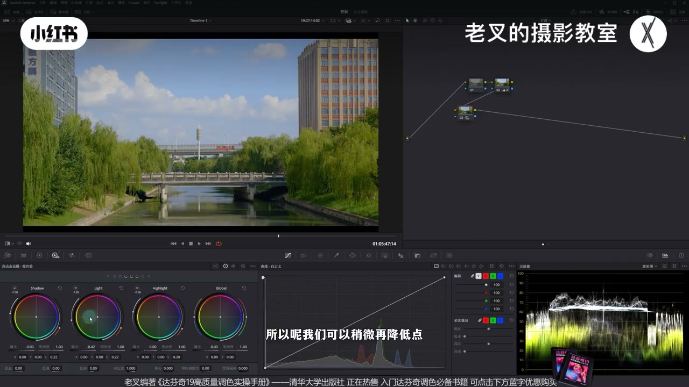
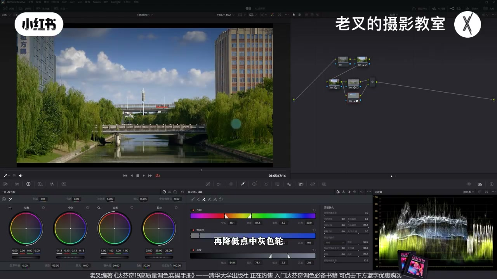
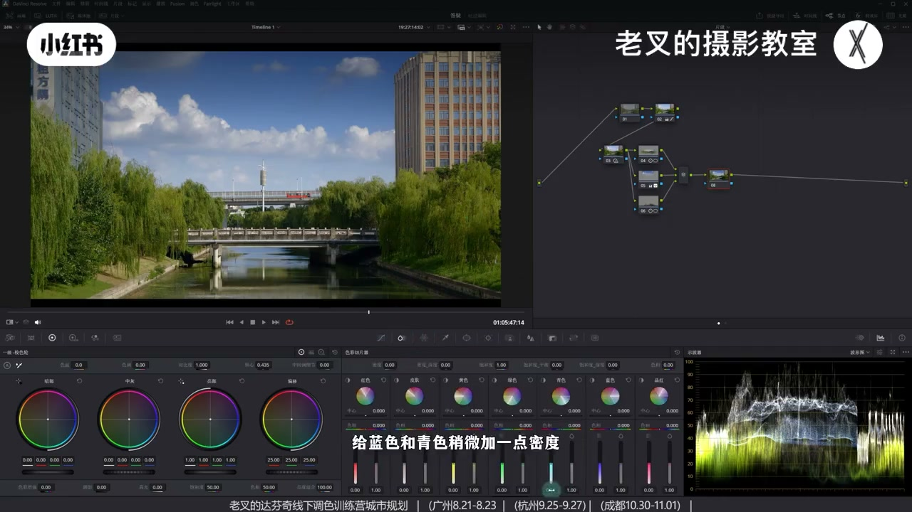
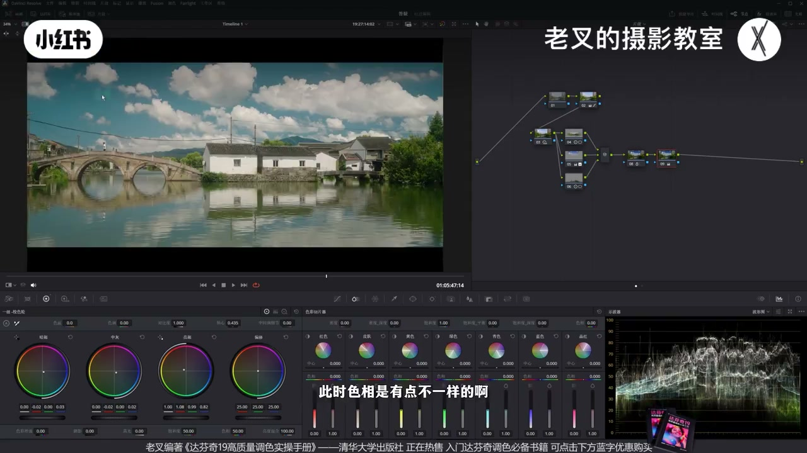
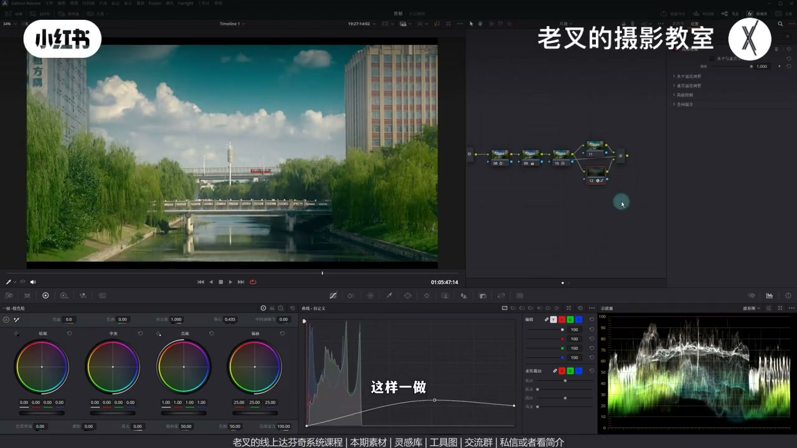
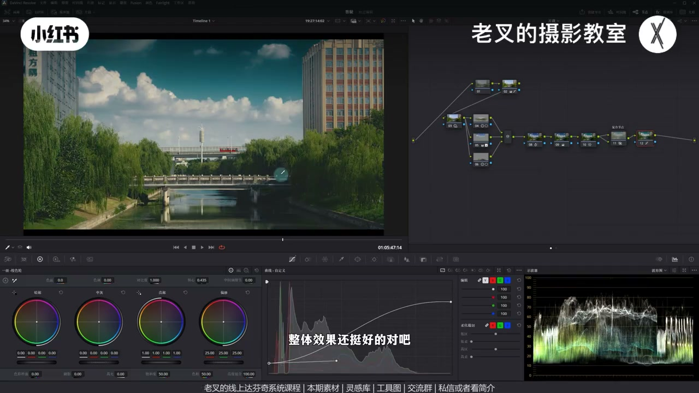

内容要点
把高反差亮调街景做成「又暗又亮」的低反差暗调电影感：HDR 上压保光感 → 分区重塑天空/建筑/水面 → 蓝青加密度压天空 → 一级轮高光暖暗部冷并向量靠青 → 图层+高斯模糊做黑柔 → 柔和对比度样条线压缩两端。素材需大光比、非大平光/顺光。
知识结构
降 Light、略降 Shadow、抬 Highlight：上压成暗调仍留光感。
中间建筑对比度；天空渐变+限定器压暗；水面遮罩加对比。
蓝青加密度降明度；不够再略全局密度。
一级轮亮暖中灰回调暗冷；向量蓝→青并略降青饱和。
图层滤色+高斯模糊满+曲线；复合节点用增益控不透明度。
样条线裁切高光/暗部两端；对比参考微调天空。
暗调电影感＝全局影调压缩 + 分区（天暗、中间与水面亮）+ 青绿染色 + 黑柔与柔和对比度。关键是「又暗又亮」：压反差时仍用 Highlight 找回光感。
00:00-01:09目标：高反差亮调 → 低反差暗调且保光感
朋友问「这种画面达芬奇怎么调」。先还原再看参考：整体闷、又亮又不亮——把高反差亮调做成低反差暗调，还要保住光感。HDR：要暗调就选「上往下压」——降 Light；过渡不舒服再略降 Shadow，让暗部略像平移下压但仍收缩；再略抬 Highlight 把光感找回。波形上半可不动或略上，中灰以下往暗压。

01:09-02:21重塑分区：中间亮、天空暗、水面有对比
全局影调不够：参考天空暗、中间建筑亮、地面水偏亮。中间画遮罩略加对比度（不是重心，别加太多）；Option/Shift+P 并行拉上→下渐变压天空，两侧有建筑则加限定器只选天空，再降曝光/阴影滑块/中灰。水面再并行遮罩略加对比——水面像镜面，靠对比去灰。三节点重塑曝光分布，接近「暴雨前晴天」：天暗云在、地面受光仍亮。

02:21-02:50天空不够暗：用密度降明度，别死磕前面曝光
天空仍不够暗时，不必再在前链路猛压曝光（易不舒服）。新节点给蓝、青略加密度——密度升则明度降；不够再略全局加一点密度即可。

02:50-03:38染色：高光暖暗部冷，蓝往青靠
素材可知识平台免费自取。参考明显高光暖、暗部冷：亮部左上加暖，中灰右下回调，暗部右下加冷。色相上参考偏青，不必用色轮硬磨——向量示波器把蓝往青拉，并略降青饱和，对照参考即可接近。

03:38-04:30后期黑柔：图层滤色 + 高斯模糊 + 曲线，增益控力度
参考拍摄带黑柔。后期：Alt/Option+L 建图层节点，混合器合成模式改滤色（Screen）；下层拖入高斯模糊拉满，曲线压高光、中间略抬做柔化；暗部抬太多则把暗部段右移减弱。力度过大且方向对时，三选中建复合节点，用键输出增益降不透明度，留淡淡柔感即可。

04:30-05:37柔和对比度收「又暗又亮」+ 适用边界
最后上柔和对比度可编辑样条线：高光降、高光波谷提，暗部提、暗部波谷压——在保护中低调反差前提下压缩两端，这是「又暗又亮」能否成立的关键一步。与参考比可回调天空与饱和。该风格不太挑素材，但需前期大光比、非大平光也非顺光，场景要对。

完整转录（198段）
以下文本由 Whisper medium 模型自动转录，可能存在少量识别误差，已尽可能修正。
这种画面又打不进怎么调啊 这是有位朋友的问题
首先呢我们要先还原 然后呢观察一下参考图
其实就算不看波形图我们也能够发现啊
它整体是有点闷的感觉的对吧
就是一种又亮又不亮的效果
这其实是将高反差的亮调画面做成低反差暗调
但是又能够保证它的光感的效果
要实现这个我们可以借助HDR色轮来操作
先建一个节点拉到第二排
降低反差能有几种方式
第一个就是上下一起压缩
或者是上往下压 再或者就是下往上提
那我们想要低反差暗调的画面
自然就是要选择上往下压
所以呢我们可以先降低点Light色轮的曝光
我们看到降低Light色轮的曝光之后呢
在波形图上它是不是往下压了
整体的反差就是会降低了
可是这样做呢画面的高光和暗部其实过度不舒服
所以呢我们可以稍微再降低点Shadow色轮的曝光
让它的暗部有一点点像是平移往下降的一个效果
但是还是收缩的
再稍微提高一点Highlight色轮的曝光
让它的光感能够回来
大概是这样的一个情况
看到波形图的变化
上半部分保持不变或者是稍微有点往上走
但是终会开始就会往暗部去压缩
就能够实现这样的一个效果了
但是全局调整影调肯定是不够的
画面的曝光分区其实也不是很正确
参考图的天空是暗的
中间的建筑是亮的
地面的水其实也偏亮
那这一点我们可以依次去来操作
首先先建立一个节点
给中间部分画一个遮罩
然后给它稍微加一点点对比度
不用加太多
因为它不是我们调整的重心
再按住要的加P或者是Option加P
建立一个并行节点
我们给它从上往下拉一个渐变遮罩
其实参考图它也是从上往下
有个渐变的效果的
但是又因为左右两侧有建筑对吧
我不想影响到建筑
所以我们可以再加一个限定器
来把天空给选出来
大概一选
然后我们给它稍微降低一点曝光
稍微降一点阴影滑块
再降低一点中灰色轮
然后是水面
同样我们再按住要的加P
或者是Option加P
建立一个并行节点
给水面画一个遮罩
加一点点对比度
其实水面和镜面是有点像的
我们都需要通过增加对比度来
让它显得不灰
那这时候我们看到
通过这三个节点的调整
重塑了画面曝光分布
你看到效果其实还是挺不错的对吧
这点其实很重要
参考图它这样的一个风格
有一点点像是暴雨前的晴天
天空有云但是偏暗
但地面的受光面又偏亮
所以我们要实现这个
就必须要分区调整
但如果你觉得天空还是不够暗的话
你其实不用在前面再调曝光了
因为调多了可能不舒服
我们可以再来一个节点
给蓝色和青色稍微加一点密度
你看这个效果是不是挺好的
因为增加密度会降低明度
如果还不够的话
你也可以稍微全局加一点点密度
再补一下
我觉得稍微来一点就行了
然后就要开始去染色
作者也同意分享这一个素材
我传到了现场分享平台
可以私信或是看我剪辑来加入后面
免费自取
还要打开你的线上系统课程
和线下调色训练营
我们看到参考图
参考图它其实有非常明显的
高光暖暗不冷的特性
首先把亮部色轮往左上角去移动
给它加一点点暖
然后再把中晖色轮往右下角去移动
给它稍微做一下回调
让它的过渡能够顺滑一些
最后再是暗部色轮
给它也往右下角去走
让它暗部能够带上一点的冷
大概是这样的一个效果
这个能够给画面带上淡淡的暖色
但同时不会丢失暗部的冷色
对吧
但是我们跟参考图
此时色相是有点不一样的
我们的蓝是蓝
它的蓝是青色
关于这一点点小调整
我不建议你用色轮再去磨了
麻烦我们可以直接再来一个节点
用蜘蛛网去调
这个更加直观
把蓝色往青色方向去拉
也可以稍微降低点青色的饱和度
我们把参考图打开对照一下
好
大概是这样的一个情况
其实就比较接近了
对吧
然后就是黑柔
参考图它其实就是有黑柔的
它拍摄的时候就放了黑柔
那我们在后期怎么建立呢
可以先建一个节点
在Android Out加L
建立一个涂层节点
在涂层混合器中
给它右键
将合成模式改成绿色
然后再在下面这个节点
我们拖入达芬奇自带的高丝模糊
将高丝模糊的数值给它拉满
再来到曲线面板
把高光这一段给它往下降
再把中间这一部分
给它稍微往上一提
这样一做
我们就给它画面带上了一个柔化的效果
可是暗部提升我觉得有点太多了
所以我们可以把暗部这一段
给它往右边稍微拉一拉
稍微降低点暗部的一个效果
好
我觉得这样的一个情况挺好的
但如果这时候你的力度稍微大了一点
但整体的一个效果方向是没问题的话
你其实不用再去改你的曲线了
可以把这三个东西选中
右键创建复合节点
通过键输出的增益
去降低它的一个不透明度
带上淡淡的这种柔和的感觉就可以了
最后也是最关键的一步
这一步就取决于你画面能不能实现
又暗又亮的效果
我们再来个节点
要建立一个柔和对不堵
在曲线右上角三个点的设置中
我们勾选可编辑的样条线
再把高光这一段给它往下降
把高光延伸出来的波感给它往上提
再把暗部给它往上提
把暗部延伸出来的波感给它往下压
好 此时你看
我们波形图上
它的高光这部分是被我们裁切了
暗部也被我们往上提也裁切了
那这样就能够保护中低调反差
不受到影响的前提下
压缩高光跟暗部
整体效果还挺好的 对吧
我们与参考图做一下对比
那我们的天空稍微暗了一点
可以把天空回调一些
饱和度也稍微降低一点点吧
好
其他的其大差不差
整体效果是有的
在与我们自己的一个还原后的画面
做对比的话
它就能够赋予一个
非常非常强的风格
其实这种风格没有很挑素材
只要你前期拍摄的时候
有明确的大光比
然后又不是大屏光
也不是顺光的话
其实就能够大概模拟出来
但是场景要对
素材大家可以领取过去做练练手
剪到这里
如果你觉得你有帮助的话
还希望多多三连
好了 这期就到这里
886